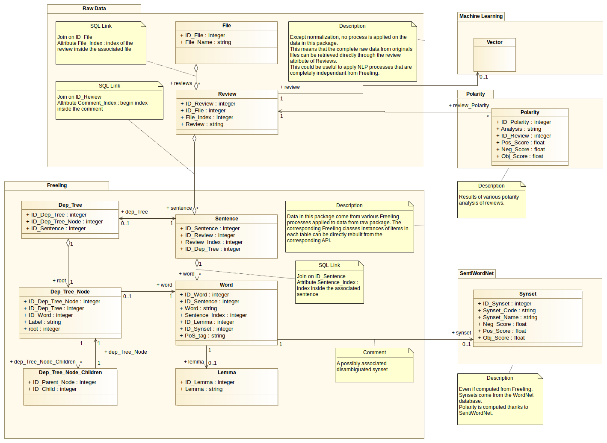

Database¶
Loacore allow you to represent a text document as a set of entries in an SQL database, allow various SQL based analysis and statistics.
Main Structure¶
This part stricly contains all the information of the original texts files, meaning that the full content and structure of the original text can be retrieve from those tables without any loss of information.
File table¶
- File_Name : an arbitrary name for each file, that should be unique. In Loacore, the absolute path of the added file is used, but the user is free to change File_Name as he wants.
SQL requests examples
# Select all file name SELECT File_Name FROM File; # Select number of files in database SELECT count(*) FROM File;
Reviews table¶
This table contains reviews originally contained in each files.
- ID_File : id of the associated file.
- File_Index : position of the review in the file (start from 0).
- Review : a string representation of the review.
Note
Considering the following structures of Sentence and Word, the attribute review is not necessary. However, Freeling processes are made from those representations in practice.
SQL requests examples
# Select reviews content of file 1 SELECT Review FROM Review ORDER BY File_Index WHERE ID_File = 1; # Select review count in each file SELECT File_Name, count(*) FROM File JOIN Review ON File.ID_File = Review.ID_File GROUP BY File_Name;
Sentence table¶
Abstract representation of sentences, that links reviews to words.
- ID_Review : id of the associated review.
- Review_Index : position of the sentence in the review (start from 0)
- ID_Dep_Tree : id of a possibly associated dependency tree
SQL Requests Example
# sentence count in each file SELECT File_Name, count(*) FROM File JOIN Review ON File.ID_File = Review.ID_File JOIN Sentence ON Review.ID_Review = Sentence.ID_Review GROUP BY File_Name;
Word table¶
Concrete file content.
- ID_Sentence : id of the associated sentence.
- Word : string representing the word, in its original form.
- Sentence_Index : position of the word in the sentence.
- ID_Lemma : id of a possibly associated lemma
- ID_Synset : id of a possibly associated synset
- PoS_tag : possibly associated Part Of Speech tag.
SQL Requests Example
# select sentence's words in their original order SELECT ID_Sentence, Word FROM Word ORDER BY ID_Sentence, Sentence_Index; # select average sentence length for each file (reminder : punctuation elements are considered as words) SELECT File_Name, AVG(word_count) FROM (SELECT ID_Sentence AS id, COUNT(*) AS word_count FROM Word GROUP BY id) JOIN Sentence ON id = Sentence.ID_Sentence JOIN Review ON Sentence.ID_Review = Review.ID_Review JOIN File ON Review.ID_File = File.ID_File GROUP BY File_Name;
Analysis Results¶
Lemma¶

Considering its content, this table does not seem really necessary and lemma could have been stored directly in the Word table, but this has been done to enhence clarity.
- Lemma : string representation of a lemma
SQL Requests Example
# select global lemma vocabulary SELECT DISTINCT Lemma FROM Lemma; # compute bag of word representations of each review using lemmas SELECT Review.ID_Review, Lemma, count(*) FROM Word JOIN Lemma ON Word.ID_Lemma = Lemma.ID_Lemma JOIN Sentence ON Word.ID_Sentence = Sentence.ID_Sentence JOIN Review ON Sentence.ID_Review = Review.ID_Review GROUP BY Review.ID_Review, Lemma;
Synset¶
Results from Freeling disambiguation and SentiWordNet polarities.
- Synset_Code : WordNet offset (used in FreeLing)
- Synset_Name : name representation (e.g. : dog.n.1, used in nltk)
- Neg_Score, Pos_Score, Obj_Score : positive, negative and objective scores obtained in SentiWordNet.
SQL Requests Example
# select global synset vocabulary (disambiguated synsets)
SELECT DISTINCT Synset_Name FROM Synset;
# compute bag of word representations of each review using disambiguated synsets
SELECT Review.ID_Review, Synset_Name, count(*)
FROM Word
JOIN Synset ON Word.ID_Synset = Synset.ID_Synset
JOIN Sentence ON Word.ID_Sentence = Sentence.ID_Sentence
JOIN Review ON Sentence.ID_Review = Review.ID_Review
GROUP BY Review.ID_Review, Synset_Name;
Dependency Trees¶
Dependency tree structure is represented using three tables.
Dep_tree¶
- This table represent the entry point to retrieve a Dep_Tree from a Sentence.
- ID_Dep_Tree_Node : ID of the root node, reference to Dep_Tree_Node table.
- ID_Sentence : ID of the represented sentence, reference to Sentence table.
Dep_Tree_Node¶
- This table stores data about each node.
- ID_Dep_Tree : reference to the Dep_Tree to which this node belongs.
- ID_Word : Word linked to this node, reference to Word table.
- Label : dependency label.
- root : 1 if this node is the root of its Dep_Tree, else 0.
Dep_Tree_Node_Children¶
- This table represents node hierarchy.
- ID_Parent_Node : ID of a parent, reference to Dep_Tree_Node.
- ID_Child : ID of a child of the considered parent, reference to Dep_Tree_Node.
Several childs can be linked to the same parent through several records in the table.
The load_dep_trees() combines SQL requests and recursion to load Dep Trees contained in those tables in DepTree classes.
Source code : https://github.com/PaulBreugnot/Loacore/blob/master/loacore/load/deptree_load.py